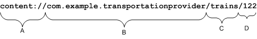

Content providers store and retrieve data and make it accessible to all
applications. They're the only way to share data across applications; there's
no common storage area that all Android packages can access.
内容提供者可以用来存取数据，并且可以使所有应用程序访问这些数据。Content
providers是应用程序之间共享数据的唯一方式；不存在所有Android包都能够访问的共用存储区。
Android ships with a number of content providers for common data types
(audio, video, images, personal contact information, and so on). You can
see some of them listed in the android.provider
package. You can query these providers for the data they contain (although,
for some, you must acquire the proper permission to read the data).
Android包含了一些常用数据类型的Content providers（音频、视频、图像、个人通讯录等），在android.provider包中可以找到它们。可以查询这些Provider包含的数据（对某些数据来说，我们必须获得必要的授权）。
If you want to make your own data public, you have two options: You can
create your own content provider (a ContentProvider
subclass) or you can add the data to an existing provider — if there's
one that controls the same type of data and you have permission to write to it.
本文介绍怎样使用Content providers。基本概念的简要讨论之后，我们将探讨怎样查询一个Content
Provider，怎样修改一个Provider控制的数据，以及怎样创建自己的Content Provider（ContentProvider的子类）。
This document is an introduction to using content providers. After a
brief discussion of the fundamentals, it explores how to query a content
provider, how to modify data controlled by a provider, and how to create
a content provider of your own.
这篇文档介绍了如何使用内容提供者。文档前边简要介绍了基础知识，后边演示了如何向内容提供者发出一个请求，如何修改一个提供者控制的数据，还有如何创建您自己的内容提供者
How a content provider actually stores its data under the covers is
up to its designer. But all content providers implement a common interface
for querying the provider and returning results — as well as for
adding, altering, and deleting data.
内容提供者是如何存储数据您是不用关心的。但是所有的提供者都是实现的一个接口，提供了对提供者相应请求和进行返回的方法——还有添加数据，修改数据，删除数据的方法。
It's an interface that clients use indirectly, most generally through
ContentResolver objects. You get a ContentResolver
by calling getContentResolver()
这个内容提供者这个数据接口是不能由您直接使用的，通常是通过ContentResolver对象进行使用。您可以通过在活动中或是其他应用程序组件中调用getContentResolver()方法获得一个内容解析者：
ContentResolver cr = getContentResolver();
You can then use the ContentResolver's methods to interact with whatever
content providers you're interested in.
您可以使用内容解析者的方法和任何您想要的内容提供者进行数据交流。
When a query is initiated, the Android system identifies the content provider
that's the target of the query and makes sure that it is up and running.
The system instantiates all ContentProvider objects; you never need to do it
on your own. In fact, you never deal directly with ContentProvider objects
at all. Typically, there's just a single instance of each type of
ContentProvider. But it can communicate with multiple ContentResolver objects
in different applications and processes. The interaction between processes is
handled by the ContentResolver and ContentProvider classes.
当您发出一个请求的时候，Android
系统会识别请求需要的内容提供者然后确保这个内容提供者已经实例化正在运行。系统会实例化所有内容提供者对象；您不需要自己动手进行实例化。实际上，您从来都没有和内容提供者进行直接交流。典型的，每一个内容提供者类只有一个实例。但是他可以和来自不同程序或进程的多个内容解析者进行通信。进程之间的通信也是由内容提供者和内容解析者这两个类完成的。
Content providers expose their data as a simple table on a database model,
where each row is a record and each column is data of a particular type
and meaning. For example, information about people and their phone numbers
might be exposed as follows:
内容提供者将他们后台的数据以数据表的形式暴露出来，这个数据表的行是一个记录，列是数据的类型或是意义。例如，有关联系人的信息还有他们的电话号码可能以下面这种形式表达：
| _ID | NUMBER | NUMBER_KEY | LABEL | NAME | TYPE |
|---|---|---|---|---|---|
| 13 | (425) 555 6677 | 425 555 6677 | Kirkland office | Bully Pulpit | TYPE_WORK |
| 44 | (212) 555-1234 | 212 555 1234 | NY apartment | Alan Vain | TYPE_HOME |
| 45 | (212) 555-6657 | 212 555 6657 | Downtown office | Alan Vain | TYPE_MOBILE |
| 53 | 201.555.4433 | 201 555 4433 | Love Nest | Rex Cars | TYPE_HOME |
Every record includes a numeric _ID field that uniquely identifies
the record within the table. IDs can be used to match records in related
tables — for example, to find a person's phone number in one table
and pictures of that person in another.
每一个记录都有一个唯一的数值类型 _ID
的域，用来对记录进行识别。ID可以用来在相关的表中寻找数据——例如，在一个表中寻找一个人的电话号码，在另一张表中寻找这个人的照片。
A query returns a Cursor object that can move from
record to record and column to column to read the contents of each field.
It has specialized methods for reading each type of data. So, to read a field,
you must know what type of data the field contains. (There's more on query
results and Cursor objects later.)
请求会返回 Cursor
一个对象，游标对象可以在记录和记录还有列与列之间移动，读取这个域中的数据。读取不同类型的数据使用的方法是不同的。因此，如果想要读取一个域中的数据，您必须知道这个域中数据的类型。（后边还有更多有关请求的返回结果和游标对象的讨论）
Each content provider exposes a public URI (wrapped as a Uri
object) that uniquely identifies its data set. A content provider that controls
multiple data sets (multiple tables) exposes a separate URI for each one. All
URIs for providers begin with the string "content://". The content:
scheme identifies the data as being controlled by a content provider.
每一个内容提供者暴露出来一个公共的 URI （包装为一个 Uri
对象），这个URI唯一的标志了这个数据表。控制多个数据集合（数据表）的内容提供者的每个数据表的URI是不同的。所有的URI都是由"content://"字符串开头的。前缀“content:”表明了这个数据表是由内容提供者控制的。
If you're defining a content provider, it's a good idea to also define a
constant for its URI, to simplify client code and make future updates cleaner.
Android defines CONTENT_URI constants for all the providers that come
with the platform. For example, the URI for the table that matches
phone numbers to people and the URI for the table that holds pictures of
people (both controlled by the Contacts content provider) are:
如果您想要定义一个内容提供者，您最好为您的提供者定义一个静态的URI，这样可以使其他代码更容易引用，而且便于以后对代码的维护。Android所有的平台自带的内容提供者都定义了一个静态的CONTENT_URI。例如，存放有联系人电话号码的表的URI对象和联系人照片的URI（两个数据表都是由Contacts内容提供者控制的）是：
android.provider.Contacts.Phones.CONTENT_URI
android.provider.Contacts.Photos.CONTENT_URI
Similarly, the URIs for the table of recent phone calls and the table
of calendar entries are:
类似的，最近通话和日历的表的URI分别是：
android.provider.CallLog.Calls.CONTENT_URI
android.provider.Calendar.CONTENT_URI
The URI constant is used in all interactions with the content provider.
Every ContentResolver method takes the URI
as its first argument. It's what identifies which provider the ContentResolver
should talk to and which table of the provider is being targeted.
这些静态的URI 用来与内容提供者进行交流。每一个ContentResolver的方法都要使用URI作第一个参数。这个URI指示了内容解解析者将于哪个内容提供者交流，而且指定了内容提供者使用哪个数据表。
You need three pieces of information to query a content provider:
向内容提供者发出一个请求，您需要下列三个条件：
If you're querying a particular record, you also need the ID for that record.
如果您要请求返回一个指定的记录，您还需要知道这个记录的ID。
To query a content provider, you can use either the
ContentResolver.query()Activity.managedQuery()managedQuery()
causes the activity to manage the life cycle of the Cursor. A managed Cursor
handles all of the niceties, such as unloading itself when the activity pauses,
and requerying itself when the activity restarts. You can ask an Activity to
begin managing an unmanaged Cursor object for you by calling
Activity.startManagingCursor()
您可以使用ContentResolver.query()方法或是 Activity.managedQuery()方法，向内容提供者发出请求。两个方法的参数是一样的，而且都返回一个游标对象。但是，managedQuery()会让活动管理这个游标对象的生命周期。被管理的游标会自己处理一些细节上的事，比如在活动暂停的时候将自己卸载，，然后在活动恢复的时候重新向内容提供者发出请求恢复自己。您可以调用Activity.startManagingCursor()让活动对一个未被管理的游标对象进行管理。
The first argument to either query()
managedQuery()CONTENT_URI constant that identifies a particular
ContentProvider and data set (see URIs earlier).
不管是query()
还是
managedQuery() 方法，他们的第一个参数都是能对提供者进行识别的URI —— 能用来识别内容提供者和数据表的 静态的 CONTENT_URI
（参见前边的URIs）。
To restrict a query to just one record, you can append the _ID value for
that record to the URI — that is, place a string matching the ID as the
last segment of the path part of the URI. For example, if the ID is 23,
the URI would be:
如果您只想请求一个特定的记录，您可以向URI中加入那个记录的 _ID
值——就是说，把与那个记录对应的ID值放到字符串的最后的部分。例如，如果 ID 是23 ，那么最后的URI就是：
content://. . . ./23
There are some helper methods, particularly
ContentUris.withAppendedId()Uri.withAppendedPath()
向URI结尾添加ID值，您可以使用一些帮助类，最典型的有ContentUris.withAppendedId()和Uri.withAppendedPath()。两个都是静态的方法，返回添加完ID的Uri对象。如果您想要在联系人数据库中寻找一个ID为23的记录，您可以这样进行请求：
import android.provider.Contacts.People; import android.content.ContentUris; import android.net.Uri; import android.database.Cursor; // Use the ContentUris method to produce the base URI for the contact with _ID == 23. // 使用ContentUris方法构造指向记录ID为23的URI Uri myPerson = ContentUris.withAppendedId(People.CONTENT_URI, 23); // Alternatively, use the Uri method to produce the base URI. // 可选的，您也可以使用 Uri 方法构造这个 URI // It takes a string rather than an integer. // 它的第二个参数是字符串，而不是整数 Uri myPerson = Uri.withAppendedPath(People.CONTENT_URI, "23"); // Then query for this specific record: // 然后您就可以请求这个指定的记录了 Cursor cur = managedQuery(myPerson, null, null, null, null);
The other arguments to the query()managedQuery()
query()
和 managedQuery()
方法的另外几个参数对请求进行了一些限定，这些参数是：
null
value returns all columns. Otherwise, only columns that are listed by name
are returned. All the content providers that come with the platform define
constants for their columns. For example, the
android.provider.Contacts.Phones class
defines constants for the names of the columns in the phone table illustrated
earlier &mdash _ID, NUMBER, NUMBER_KEY, NAME,
and so on.null
会返回所有的列。例如，android.provider.Contacts.Phones
类定义了有 _ID, NUMBER, NUMBER_KEY, NAME,这几个列名称的有关电话的数据表。A filter detailing which rows to return, formatted as an SQL WHERE
clause (excluding the WHERE itself). A null value returns
all rows (unless the URI limits the query to a single record).
限定返回哪一行的过滤器，格式遵循SQL WHERE
语句格式（包括 WHERE
从句自己）。使用 null 会返回所有的行（除非是URI将请求限制到某个单一记录）。
Selection arguments.
选择参数 （You may include ?s in selection, which will be replaced by the values from
selectionArgs, in the order that they appear in the selection. The values will
be bound as Strings.）
A sorting order for the rows that are returned, formatted as an SQL
ORDER BY clause (excluding the ORDER BY itself). A null
value returns the records in the default order for the table, which may be
unordered.
设定返回的行的排序方式，格式遵循SQL的语句（包括
ORDER BY 本身）。使用 null
会按表中默认的顺序返回记录。
Let's look at an example query to retrieve a list of contact names and their
primary phone numbers:
下面让我们看一个发出请求获取联系人名字和他们主要电话的号码的例子：
import android.provider.Contacts.People;
import android.database.Cursor;
// Form an array specifying which columns to return.
//构造一个指明返回哪个列的数组
String[] projection = new String[] {
People._ID,
People._COUNT,
People.NAME,
People.NUMBER
};
// Get the base URI for the People table in the Contacts content provider.
//获得联系人内容提供者People数据表的URI
Uri contacts = People.CONTENT_URI;
// Make the query.
//发出请求
Cursor managedCursor = managedQuery(contacts,
projection, // Which columns to return
//指定返回哪一列
null, // Which rows to return (all rows)
//指定返回哪一行（这里是所有行）
null, // Selection arguments (none)
//可选的参数（这里没有）
// Put the results in ascending order by name
//将结果使用名字升序排列
People.NAME + " ASC");
This query retrieves data from the People table of the Contacts content
provider. It gets the name, primary phone number, and unique record ID for
each contact. It also reports the number of records that are returned as
the _COUNT field of each record.
上边例子中的请求是从联系人内容提供者的联系人信息的数据表中获取数据。他获取名字，主要电话的号码，还有每一个联系人的唯一的记录ID。它也报告了记录的数量作为每条记录的_COUNT字段返回。
The constants for the names of the columns are defined in various interfaces
— _ID and _COUNT in
BaseColumns, NAME in PeopleColumns, and NUMBER
in PhoneColumns. The
Contacts.People class implements
each of these interfaces, which is why the code example above could refer
to them using just the class name.
上边例子中的列式定义在不同的接口中的—— _ID 和 _COUNT 在
BaseColumns中， NAME
在 PeopleColumns中， NUMBER
在 PhoneColumns中。Contacts.People
类实现了这些接口，这就是为什么例子中只用一个类就能使用它们的原因。
A query returns a set of zero or more database records. The names of the
columns, their default order, and their data types are specific to each
content provider.
But every provider has an _ID column, which holds a unique numeric
ID for each record. Every provider can also report the number
of records returned as the _COUNT column; its value
is the same for all rows.
请求返回一个含有零个或多个数据库记录的集合。列的名字，默认的顺序，是随着提供者不同而不同的。但是每一个提供者都有一个_ID列，这个列保存了每一个记录的唯一的整形ID。每一个提供者都可以将记录的数量作为列的值返回；这一列的值每行都是相同的。
Here is an example result set for the query in the previous section:
下面这个结果是上边例子返回的一个数据集合：
| _ID | _COUNT | NAME | NUMBER |
|---|---|---|---|
| 44 | 3 | Alan Vain | 212 555 1234 |
| 13 | 3 | Bully Pulpit | 425 555 6677 |
| 53 | 3 | Rex Cars | 201 555 4433 |
The retrieved data is exposed by a Cursor
object that can be used to iterate backward or forward through the result
set. You can use this object only to read the data. To add, modify, or
delete data, you must use a ContentResolver object.
获取的数据由 Cursor
对象暴露出来，这个对象可以用来将读取位置在数据集中进行移动。这个对象只能用来读取数据。添加，修改或是删除数据，您必须使用内容解析者对象。
The Cursor object returned by a query provides access to a recordset of
results. If you have queried for a specific record by ID, this set will
contain only one value. Otherwise, it can contain multiple values.
(If there are no matches, it can also be empty.) You
can read data from specific fields in the record, but you must know the
data type of the field, because the Cursor object has a separate method
for reading each type of data — such as getString()getInt()getFloat()
请求返回一个游标对象，您可以使用游标对象连接读取数据集中的值。如果您是使用ID请求的某个特定的对象，这个数据集就只包含一个记录。否则数据集则包含多个记录。（如果没有匹配的ID，还有可能是一个空集。）您可以读取记录中指定域中的值，但是您必须知道这个域中的数据类型，因为游标对象为每种数据类型分别提供了各自的读取数据的方法——比如，getString(), getInt(),和 getFloat()。（但是，对于大多数类型来说，您都可以使用读取字符串的方法，这样游标对象会返回表示这个数据的字符串对象。）游标允许您使用列号得到列名，或是使用列名得到列号。
The following snippet demonstrates reading names and phone numbers from
the query illustrated earlier:
下面的代码段演示了如何从上边的例子中获取的游标中获得数据：
import android.provider.Contacts.People;
private void getColumnData(Cursor cur){
if (cur.moveToFirst()) {
String name;
String phoneNumber;
int nameColumn = cur.getColumnIndex(People.NAME);
int phoneColumn = cur.getColumnIndex(People.NUMBER);
String imagePath;
do {
// Get the field values
//获得域中的值
name = cur.getString(nameColumn);
phoneNumber = cur.getString(phoneColumn);
// Do something with the values.
//使用这些值完成您想要做的事
...
} while (cur.moveToNext());
}
}
If a query can return binary data, such as an image or sound, the data
may be directly entered in the table or the table entry for that data may be
a string specifying a content: URI that you can use to get the data.
In general, smaller amounts of data (say, from 20 to 50K or less) are most often
directly entered in the table and can be read by calling
Cursor.getBlob()
如果某个请求会返回二进制数据，比如对图片或声音的请求，则返回的数据可能是直接的表中的数据，也有可能是指向这个域的URI（特殊的含有content:
开头的字符串），您可以使用这个URI获取数据。通常情况下，数据量较小的时候（比如说，20到50k或更小）在存储时会直接写入表中，读取的时候可以使用 Cursor.getBlob()方法。这个方法会返回一个二进制位的数组。
If the table entry is a content: URI, you should never try to open
and read the file directly (for one thing, permissions problems can make this
fail). Instead, you should call
ContentResolver.openInputStream()InputStream object that you can use to read the data.
但是如果返回的是 content: 型的URI，那么您千万不要尝试打开然后直接读取文件（其中一个原因是权限问题）。您应该使用 ContentResolver.openInputStream()
方法获得一个
InputStream
对象，然后使用这个对象读取数据。
Data kept by a content provider can be modified by:
由内容提供者控制的数据可以这样修改：
All data modification is accomplished using ContentResolver
methods. Some content providers require a more restrictive permission for writing
data than they do for reading it. If you don't have permission to write to a
content provider, the ContentResolver methods will fail.
所有的数据修改都是由 ContentResolver
的方法完成的。有些内容提供者对写数据的权限要求比读数据严格。如果您没有对某个内容提供者的写数据权限，那么这个内容解析者的方法就会失败。
To add a new record to a content provider, first set up a map of key-value pairs
in a ContentValues object, where each key matches
the name of a column in the content provider and the value is the desired
value for the new record in that column. Then call ContentResolver.insert()
向内容提供者添加一个新的记录，您需要首先在 ContentValues
对象中创建一系列键值对，每一个键是内容提供者的数据表的列名，值是您想要的这个记录在这个列上的值。然后您需要调用 ContentResolver.insert()方法，然后传入内容提供者的URI还有这个 ContentValues
对象。这个方法返回新记录的完整URI——就是说，包含有的新记录的ID的内容提供者URI。之后您就可以这个URI发出请求，然后获得指向新添加的记录的游标，还可以对记录进行进一步的修改。下面是一个例子：
import android.provider.Contacts.People; import android.content.ContentResolver; import android.content.ContentValues; ContentValues values = new ContentValues(); // Add Abraham Lincoln to contacts and make him a favorite. // 将 Abraham Lincoln 添加到联系人中，并将其设为常用联系人 values.put(People.NAME, "Abraham Lincoln"); // 1 = the new contact is added to favorites // 1代表新联系人添加到常用 // 0 = the new contact is not added to favorites // 0代表不添加 values.put(People.STARRED, 1); Uri uri = getContentResolver().insert(People.CONTENT_URI, values);
Once a record exists, you can add new information to it or modify
existing information. For example, the next step in the example above would
be to add contact information — like a phone number or an IM or e-mail
address — to the new entry.
一旦存在了一个记录，您就可以向其中添加新的信息，或是修改已有信息。例如，上边的例子下一步可能就是向新的记录中添加一些联系人的信息——比如电话号码，即时通信的账号，电子邮件地址等。
The best way to add to a record in the Contacts database is to append
the name of the table where the new data goes to the URI for the
record, then use the amended URI to add the new data values. Each
Contacts table exposes a name for this purpose as a CONTENT_DIRECTORY constant. The following code continues the previous
example by adding a phone number and e-mail address for the record
just created:
向联系人数据库中添加新的记录的最好方法是先向数据库中添加联系人的名字，然后使用返回的指向新记录的URI向记录中添加其他数据信息。每一个联系人表都会暴露名字这个域，因为需要被 CONTENT_DIRECTORY
常量使用。下面的代码继续上边的例子，演示了如何向刚才创建的记录中添加电话号码和电子邮件地址信息：
Uri phoneUri = null; Uri emailUri = null; // Add a phone number for Abraham Lincoln. Begin with the URI for // the new record just returned by insert(); it ends with the _ID // of the new record, so we don't have to add the ID ourselves. // Then append the designation for the phone table to this URI, // and use the resulting URI to insert the phone number. // 向刚才的 Abraham Lincoln 联系人添加电话号码。因为刚才 insert() 方法返回的URI包含记录的_ID，因此不用我们 // 自己添加ID。 // 然后您需要向URI中添加联系人电话号码这个地址（就是目标位置），然后使用修改后的URI添加电话号码 phoneUri = Uri.withAppendedPath(uri, People.Phones.CONTENT_DIRECTORY); values.clear(); values.put(People.Phones.TYPE, People.Phones.TYPE_MOBILE); values.put(People.Phones.NUMBER, "1233214567"); getContentResolver().insert(phoneUri, values); // Now add an email address in the same way. // 现在用类似的方法添加一个电子邮件地址。 emailUri = Uri.withAppendedPath(uri, People.ContactMethods.CONTENT_DIRECTORY); values.clear(); // ContactMethods.KIND is used to distinguish different kinds of // contact methods, such as email, IM, etc. // ContactMethods.KIND 用来区别不同类型的联系方式，比如电子邮件，即时通信等等。 values.put(People.ContactMethods.KIND, Contacts.KIND_EMAIL); values.put(People.ContactMethods.DATA, "test@example.com"); values.put(People.ContactMethods.TYPE, People.ContactMethods.TYPE_HOME); getContentResolver().insert(emailUri, values);
You can place small amounts of binary data into a table by calling
the version of ContentValues.put()content: URI for the data in the table and call
ContentResolver.openOutputStream()
您可以一小群二进制数据直接放进表中，通过调用需要二进制数组的重载的 ContentValues.put()
方法。您可以用这个方法存储一个小的像图标似的图片，或是一小段音频。但是，如果二进制数据量过大，比如一张数码照片或一首完整的歌曲，您需要在表中放入这个数据的 content:
型URI，然后使用二进制文件的URI调用ContentResolver.openOutputStream()
方法（存储这种数据实际上是内容提供者将这些二进制数据存储进一个文件，然后将文件路径放入这个记录的一个隐藏域中。）。
In this regard, the MediaStore content
provider, the main provider that dispenses image, audio, and video
data, employs a special convention: The same URI that is used with
query() or managedQuery() to get meta-information
about the binary data (such as, the caption of a photograph or the
date it was taken) is used with openInputStream()
to get the data itself. Similarly, the same URI that is used with
insert() to put meta-information into a MediaStore record
is used with openOutputStream() to place the binary data there.
The following code snippet illustrates this convention:
在存储和读取二进制数据这方面， MediaStore
内容提供者，主要的管理图片，声音还有视频数据的内容提供者，使用了一种不同的机制：在
query()中或 managedQuery()
中使用二进制数据的URI获取的是数据的相关信息（比如，照片的标题，拍摄日期），在 openInputStream()中使用同一个URI获取的是数据本身。类似的，在
insert() 中使用URI会向表中插入数据的相关信息，在 openOutputStream()中使用同一个URI是向URI的地址中放入二进制数据。下边的代码段演示了这个机制：
import android.provider.MediaStore.Images.Media;
import android.content.ContentValues;
import java.io.OutputStream;
// Save the name and description of an image in a ContentValues map.
// 向 ContentValues 对象中存入图像名字和简述的键值对
ContentValues values = new ContentValues(3);
values.put(Media.DISPLAY_NAME, "road_trip_1");
values.put(Media.DESCRIPTION, "Day 1, trip to Los Angeles");
values.put(Media.MIME_TYPE, "image/jpeg");
// Add a new record without the bitmap, but with the values just set.
// insert() returns the URI of the new record.
// 添加一个新的记录，不向其中添加位图，而是向其中写入刚才创建的ContentValues 对象
Uri uri = getContentResolver().insert(Media.EXTERNAL_CONTENT_URI, values);
// Now get a handle to the file for that record, and save the data into it.
// Here, sourceBitmap is a Bitmap object representing the file to save to the database.
// 现在可以获得一个要保存到那个记录的二进制文件的句柄，然后将数据存储到这个文件中。
// 在这里， sourceBitmap 是一个位图对象，代表要存入数据库的二进制文件
try {
OutputStream outStream = getContentResolver().openOutputStream(uri);
sourceBitmap.compress(Bitmap.CompressFormat.JPEG, 50, outStream);
outStream.close();
} catch (Exception e) {
Log.e(TAG, "exception while writing image", e);
}
To batch update a group of records (for example, to change "NY" to "New York"
in all fields), call the ContentResolver.update()
如想要更新一组记录（例如将所有域中的“NY”改为“New York”），您可以调用 ContentResolver.update()
方法，传入列名和药更新的值。
To delete a single record, call {ContentResolver.delete()
您可以调用ContentResolver.delete()传入您想要删除的记录行的URI来删除一个记录。
To delete multiple rows, call ContentResolver.delete()android.provider.Contacts.People.CONTENT_URI) and an SQL WHERE
clause defining which rows to delete. (Caution:
Be sure to include a valid WHERE clause if you're deleting a general
type, or you risk deleting more records than you intended!).
如果您想要删除多个行，您可以调用 ContentResolver.delete()
，传入您要删除的类型的URI（例如，android.provider.Contacts.People.CONTENT_URI）还有一个SQL WHERE
语句，指定您想要删除的行。（注意：如果您要删除一个含有项目较多的类型，请确保您的 WHERE
语句是正确的，如果不正确的话，有可能会删除非预期的项目。）
To create a content provider, you must:
创建一个内容提供者，您需要：
SQLiteOpenHelper
class to help you create a database and SQLiteDatabase to manage it.SQLiteOpenHelper
类帮助您创建数据可和管理数据库的 SQLiteDatabase
。Extend the ContentProvider class to provide
access to the data.
继承 ContentProvider
类，创建到数据的连接。
Declare the content provider in the manifest file for your
application (AndroidManifest.xml).
在您的应用程序的清单文件（AndroidManifest.xml）中声明您自己的内容提供者。
The following sections have notes on the last two of these tasks.
下面的部分介绍了后两部。
You define a ContentProvider subclass to
expose your data to others using the conventions expected by
ContentResolver and Cursor objects. Principally, this means
implementing six abstract methods declared in the ContentProvider class:
query()
insert()
update()
delete()
getType()
onCreate()
The query() method must return a Cursor object
that can iterate over the requested data. Cursor itself is an interface, but
Android provides some ready-made Cursor objects that you can use. For example,
SQLiteCursor can iterate over data stored in
an SQLite database. You get the Cursor object by calling any of the SQLiteDatabase class's query()
methods. There are other Cursor implementations — such as MatrixCursor — for data not stored in a database.
Because these ContentProvider methods can be called from various ContentResolver objects in different processes and threads, they must be implemented in a thread-safe manner.
As a courtesy, you might also want to call ContentResolver.notifyChange()
Beyond defining the subclass itself, there are other steps you should take to simplify the work of clients and make the class more accessible:
public static final Uri
named CONTENT_URI. This is the string that represents the full
content: URI that your content provider handles. You must define a
unique string for this value. The best solution is to use the fully-qualified
class name of the content provider (made lowercase). So, for example, the
URI for a TransportationProvider class could be defined as follows:
public static final Uri CONTENT_URI =
Uri.parse("content://com.example.codelab.transporationprovider");
If the provider has subtables, also define CONTENT_URI constants for
each of the subtables. These URIs should all have the same authority (since
that identifies the content provider), and be distinguished only by their paths.
For example:
content://com.example.codelab.transporationprovider/train
content://com.example.codelab.transporationprovider/air/domestic
content://com.example.codelab.transporationprovider/air/international
For an overview of content: URIs, see the Content URI
Summary at the end of this document.
Define the column names that the content provider will return to clients.
If you are using an underlying database, these column names are typically
identical to the SQL database column names they represent. Also define
public static String constants that clients can use to specify
the columns in queries and other instructions.
Be sure to include an integer column named "_id"
(with the constant _ID) for
the IDs of the records. You should have this field whether or not you have
another field (such as a URL) that is also unique among all records. If
you're using the SQLite database, the _ID field should be the
following type:
INTEGER PRIMARY KEY AUTOINCREMENT
The AUTOINCREMENT descriptor is optional. But without it, SQLite
increments an ID counter field to the next number above the largest
existing number in the column. If you delete the last row, the next row added
will have the same ID as the deleted row. AUTOINCREMENT avoids this
by having SQLite increment to the next largest value whether deleted or not.
Carefully document the data type of each column. Clients need this information to read the data.
If you are handling a new data type, you must define a new MIME type
to return in your implementation of ContentProvider.getType()content: URI submitted
to getType() limits the request to a specific record. There's one
form of the MIME type for a single record and another for multiple records.
Use the Uri methods to help determine what is being
requested. Here is the general format for each type:
For a single record: vnd.android.cursor.item/vnd.yourcompanyname.contenttype
For example, a request for train record 122, like this URI,
content://com.example.transportationprovider/trains/122
might return this MIME type:
vnd.android.cursor.item/vnd.example.rail
For multiple records: vnd.android.cursor.dir/vnd.yourcompanyname.contenttype
For example, a request for all train records, like the following URI,
content://com.example.transportationprovider/trains
might return this MIME type:
vnd.android.cursor.dir/vnd.example.rail
If you are exposing byte data that's too big to put in the table itself
— such as a large bitmap file — the field that exposes the
data to clients should actually contain a content: URI string.
This is the field that gives clients access to the data file. The record
should also have another field, named "_data" that lists the exact file
path on the device for that file. This field is not intended to be read by
the client, but by the ContentResolver. The client will call ContentResolver.openInputStream()_data" field for that record, and because
it has higher permissions than a client, it should be able to access
that file directly and return a read wrapper for the file to the client.
For an example of a private content provider implementation, see the NodePadProvider class in the Notepad sample application that ships with the SDK.
To let the Android system know about the content provider you've developed,
declare it with a <provider> element in the application's
AndroidManifest.xml file. Content providers that are not declared in the
manifest are not visible to the Android system
The name attribute is the fully qualified name of the ContentProvider
subclass. The authorities attribute is the authority part of the
content: URI that identifies the provider.
For example if the ContentProvider subclass is AutoInfoProvider, the
<provider> element might look like this:
<provider name="com.example.autos.AutoInfoProvider"
authorities="com.example.autos.autoinfoprovider"
. . . />
</provider>
Note that the authorities attribute omits the path part of a
content: URI. For example, if AutoInfoProvider controlled subtables
for different types of autos or different manufacturers,
content://com.example.autos.autoinfoprovider/honda
content://com.example.autos.autoinfoprovider/gm/compact
content://com.example.autos.autoinfoprovider/gm/suv
those paths would not be declared in the manifest. The authority is what identifies the provider, not the path; your provider can interpret the path part of the URI in any way you choose.
Other <provider> attributes can set permissions to read and
write data, provide for an icon and text that can be displayed to users,
enable and disable the provider, and so on. Set the multiprocess
attribute to "true" if data does not need to be synchronized between
multiple running versions of the content provider. This permits an instance
of the provider to be created in each client process, eliminating the need
to perform IPC.
Here is a recap of the important parts of a content URI:

The authority part of the URI; it identifies the content provider.
For third-party applications, this should be a fully-qualified class name
(reduced to lowercase) to ensure uniqueness. The authority is declared in
the <provider> element's authorities attribute:
<provider name=".TransportationProvider"
authorities="com.example.transportationprovider"
. . . >The path that the content provider uses to determine what kind of data is
being requested. This can be zero or more segments long. If the content provider
exposes only one type of data (only trains, for example), it can be absent.
If the provider exposes several types, including subtypes, it can be several
segments long — for example, "land/bus", "land/train",
"sea/ship", and "sea/submarine" to give four possibilities.
The ID of the specific record being requested, if any. This is the
_ID value of the requested record. If the request is not limited to
a single record, this segment and the trailing slash are omitted:
content://com.example.transportationprovider/trains